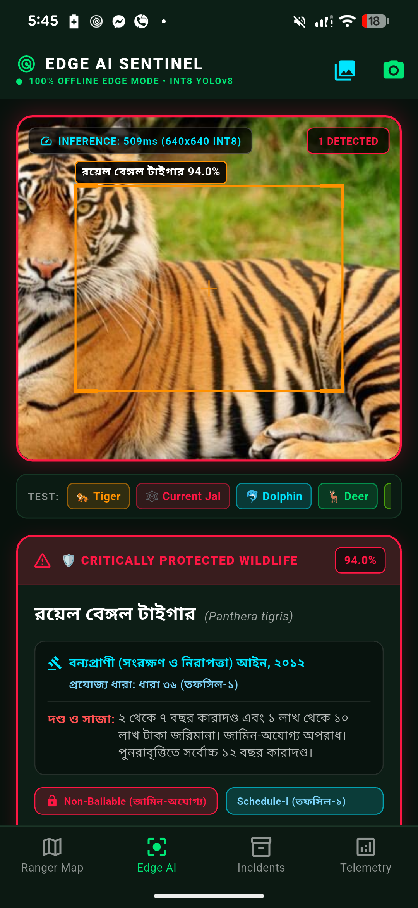
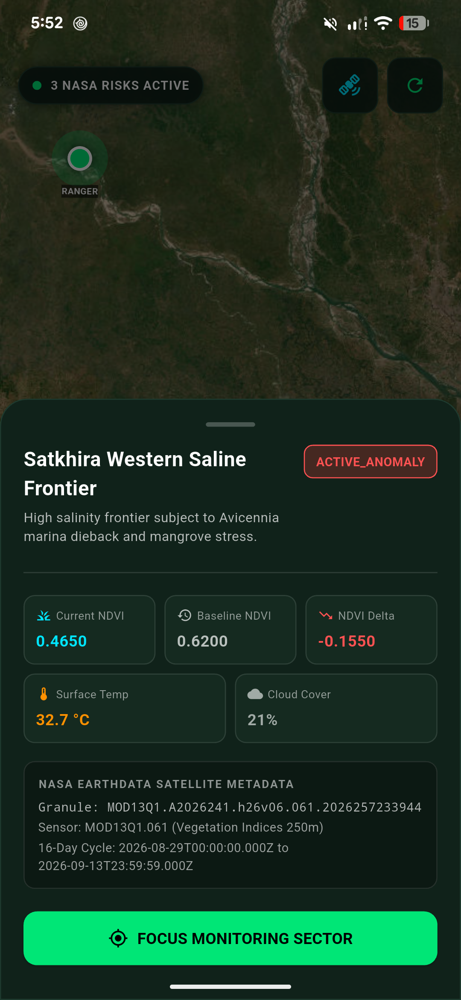

10,000 km² of Mangrove Labyrinth. Zero Cellular Coverage.
Deep inside the tidal creeks of the Sundarbans, Bangladeshi forest rangers face a communication blackout. There are no cell towers, zero internet, and no cloud access.
GPS: 21.8462° N, 89.4791° E
STATUS: DISCONNECTED FROM CLOUD
EDGE ENGINE: ARMED & READY
Empowering Rangers to Deter Local Hunters Before Crime Occurs
Many local coastal fishermen and honey collectors (mouals) inadvertently run afoul of complex forest protection laws or are misled by commercial poaching syndicates.
বন্যপ্রাণী (সংরক্ষণ ও নিরাপত্তা) আইন, ২০১২
ধারা ৩৬: বাঘ, হরিণ ও বিরল বন্যপ্রাণী শিকার, হত্যা বা পাচার আইনত কঠোর দণ্ডনীয় অপরাধ।
Exact Video Layer Voice Script
"Introducing Sundarban Sentinel: an offline edge-AI conservation terminal. Powered by a custom quantized YOLOv8 neural network, our mobile engine operates entirely on-device with zero cloud reliance. Rangers simply point their phone to detect protected wildlife and illegal nets in milliseconds. Instantly, our decoupled statutory engine maps the detection to the Bangladesh Wildlife Conservation Act 2012 and Fisheries Act 1950 — generating court-admissible evidence cards with exact legal sections, non-bailable status, and GPS coordinates."

Realtime NDVI Deforestation & Mangrove Stress Anomaly Tracking
Rangers do not just inspect the riverbanks—they monitor the entire canopy. Sundarban Sentinel ingests NASA MODIS (MOD13Q1) 16-day cycle 250m vegetation index granules.

The Grameenphone Network Handshake: Zero-Data-Loss Buffer Auto-Sync
As the ranger boat emerges from the deep creeks into coastal waterways, the terminal detects the Grameenphone 4G/5G coastal network signal.
Ready to flush offline incident buffer...
AI for Nature: Guarding the Sundarbans with Grameenphone
A scalable, national conservation infrastructure bridging Edge Artificial Intelligence and Bangladesh's leading telecom network.
100% Offline Edge AI
Quantized INT8 YOLOv8 runs locally on commodity mobile phones. Zero cloud latency, zero cellular dependency in deep wilderness.
Instant Legal Compliance
Decoupled statutory engine delivers court-admissible evidence cards mapped to Wildlife Conservation Act 2012 and Fisheries Act 1950.
NASA Realtime Deforestation
Automated multi-spectral NDVI anomaly detection identifies forest canopy degradation and illegal felling across 16-day cycles.
Grameenphone Network Sync
Zero-Data-Loss incident buffer seamlessly handshakes with Grameenphone coastal network to update national authorities.